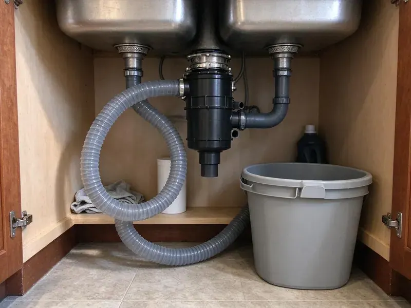

Grease Trap Cleaning in Arvada, CO
Vacuum truck pumping for in-ground interceptors and hand service for under-sink traps in Arvada, CO.
- Overflow Response
- After-Close Service
- Set Cleaning Schedules
- Dated Service Records

Get ahead of the next backup in Arvada, CO.
Every visit ends with a dated record for your inspection binder.
Grease Trap and Interceptor Cleaning in Arvada, CO
Most kitchens call us after a floor drain backs up during a Friday rush. That is the expensive way to find out. Putting the trap on a fixed interval, often somewhere between two and twelve weeks, stops grease from leaving the trap and hardening in the pipe. GFR Plumbing sets that interval once we see how quickly your trap loads up.
Work we handle every week:
- Sludge judge depth checks on every visit
- Automatic grease removal unit maintenance
- Baffle and tee inspection

Additional Kitchen Plumbing Services in Arvada, CO
Our kitchen plumbing services in Arvada, CO cover sinks, disposals, dishwashers, and grease traps so your kitchen keeps running without backups or leaks.


Customers
Why Choose GFR Plumbing for Grease Trap Cleaning in Arvada, CO?
Skipped pump-outs usually announce themselves at the floor drain first, with gray water pooling around the grate after the dish machine drains. The smell shows up next. That sour, rotten odor is grease breaking down and releasing hydrogen sulfide gas. Hydrogen sulfide also eats concrete, so a neglected interceptor wears out years early.
- Prevent Blockages, Regular pumping keeps floor drains flowing during the dinner rush.
- Prevent Backups, Pumping on schedule keeps grease from leaving the trap and hardening in the lateral.
- Flexible Scheduling, We work before you open or after close, so the kitchen never loses service time.
Citywide Coverage
Our routes cover Arvada and the towns around it on a regular rotation. Kitchens outside town ride the same route. Being on a set route keeps scheduled visits on the date we promised, which matters when an inspector expects a pump-out every 30 or 60 days.
Experienced Team
Techs ask the kitchen staff questions, because the cook knows more about what goes down the drain than anyone. Habits change grease loads. Plates scraped into the trash before the dish machine can add weeks between pump-outs, and the techs will mention it when they see a chance.
Safety-First Approach
Kitchen floors stay clean during indoor service. We put mats under every hose and bucket. Any drips get wiped and the area gets a sanitizer pass before your staff walks back in, because a health inspector does not care whose crew left the grease on the tile.
Trusted Certified Arvada Plumbing Services Professionals
At GFR Plumbing, we are proud to offer certified plumbing services throughout Arvada, CO. Credentials matter in this trade. Every repair, install and maintenance visit follows strict safety and quality rules, and the plumbers doing the work carry recognized industry credentials.
Call Us Now PHCC Plumbing Contractor Recognition
PHCC Plumbing Contractor Recognition Better Business Bureau (BBB) Accreditation
Better Business Bureau (BBB) Accreditation Angi Certified Pro
Angi Certified Pro ISO 9001 Quality Management Certification
ISO 9001 Quality Management CertificationGrease Trap and Interceptor Cleaning in Arvada, CO
Commercial Grease Trap Pumping in Arvada
Fryer-heavy menus load a trap fastest. A burger and wings place can fill a 50-gallon trap in two weeks. The trucks have the hose length for traps behind walk-ins or in basements, plus tank room for interceptors over 1,000 gallons. We pump every one to the floor.

Compliance Documentation for FOG Programs in Arvada, CO
Inspectors usually ask for at least a year of pumping records. A clean trap with no paperwork can still get written up. Our service sheets carry the date, the gallons removed, the measured depths and the hauler's name, and we can email copies to a manager or a corporate office on every visit. Keep the originals on site.
Grease Trap Hydro-Jetting in Arvada, CO
Some traps have years of grease baked onto the walls and inlet piping. Pumping alone leaves that crust in place. Jetting the empty tank and its inlet line strips it back to bare walls and gets back the capacity that crust was taking. It adds about an hour.
Grease Trap Inspection and Repair in Arvada
An empty trap is the only time anyone can see what is wrong with it. We look for cracked baffles and missing outlet tees. A missing outlet tee lets the floating grease cap pour straight into the sewer, and it is one of the most common failures we find on older concrete interceptors. We can often fix small problems on the spot.
Grease Trap Pumping and Hauling in Arvada
Trap waste is regulated as a liquid waste, so in most places it has to be hauled by a licensed hauler to an approved receiving facility, not dumped down a manhole or into a dumpster. We do both the pumping and the hauling. Everything goes into a sealed tank on the truck, and each load is logged with the gallons and where it went. No barrels left behind.
Scheduled Grease Trap Maintenance Plans in Arvada
Most pretreatment programs use the 25 percent rule: pump before floating grease and settled solids together take up a quarter of the trap's liquid depth. Some cities set a fixed interval instead, often 90 days for interceptors. We work to whichever rule applies. Changes are easy.
Residential Grease Trap Cleaning in Arvada, CO
Homes rarely have a grease trap, though a few large custom kitchens and some home-based catering setups in Arvada, CO put a small unit under the sink. Most are 10 to 20 gallon boxes. Service means scooping out grease and solids by hand, cleaning the baffle, and seating the gasket so the lid seals tight. About thirty minutes.

Commercial Grease Trap Cleaning in Arvada
Restaurants and hospital kitchens in Arvada run the same basic setup, a trap or interceptor sitting between the sinks and the sewer, sized by flow rate or by gallons. The crew pumps it out and scrapes it down. We check both tees and the baffle wall for cracks or missing parts before closing it up. Intervals run anywhere from two weeks to three months.
Grease Trap Pumping Near Me in Arvada, CO
Close by also helps with emergencies. A floor sink backing up at seven on a Friday gets a quick call back. The fix is usually a pump-down, a check of the outlet tee, and jetting the line to the main if it is packed.
Searching for grease trap cleaning near me in Arvada, CO usually means something is already backing up. We keep trucks nearby. On overflow calls a crew can often reach you the same day, carrying a vacuum truck, a cart jetter and spare tees and gaskets.
GFR Plumbing at a Glance
- Fully licensed plumbing team covering Arvada, CO
- 24/7 emergency service with same-day scheduling
- Upfront, flat-rate pricing before work begins
- 4.8-star rated by 750+ Colorado customers
Arvada Map
Arvada Information
- Population
- 121,414
- Area codes
- 303/720/970
- Service area
- Arvada and communities within 40 miles
- Nearby
- Westminster, Lakewood, Broomfield, Lafayette
Warm weather speeds up the rot inside a grease trap, so the smell and the slow drains arrive faster in the hot months. Dry air, intense sun, and big daily temperature swings put constant stress on pipes, fittings, and outdoor plumbing in Colorado.
Talk to a Plumber
Call GFR Plumbing for reliable plumbing work done by licensed pros in Arvada, CO.
Our Specialized Plumbing Services in Arvada, CO
At GFR Plumbing, we handle the full list of plumbing services across Arvada, CO. From leak detection to full system installs, our team works fast and charges fair prices on homes and commercial properties alike. Explore our core services below:


How a Grease Trap Cleaning Visit Works in Arvada, CO
A normal cleaning visit in Arvada runs about like this.
Book a Visit
Reach GFR Plumbing at (720) 727-9398 and pick a time outside service hours. We confirm the day before.
Measure First
Before any pumping, we take a depth reading. It shows how full the trap really is.
Pump and Clean
The truck pulls the full contents, and the crew scrapes the walls and baffles. We clear both tees as well.
Frequently Asked Questions About Grease Trap Cleaning in Arvada
Most visits in Arvada run somewhere between $200 and $800, set mostly by trap size and how long it has gone since the last pump-out. Hard access adds time. A trap behind a walk-in that needs 80 feet of hose costs more than one sitting next to the curb. You get the price first.
It is the most common pumping standard. When grease and solids reach a quarter of the depth, it is time to pump. Past that point the water moves through too fast for grease to separate, so grease rides out the outlet even though the trap looks like it is working.
That is usually hydrogen sulfide from grease breaking down in an overdue trap. It gets worse with a worn lid gasket. Pumping the trap, scraping the walls and replacing a flattened gasket fixes most cases, and if it comes back fast we check the vent and the floor drain traps nearby for dry seals.
Everything in the trap comes out, from the floating grease cap down to the sludge of food solids on the floor. Haulers call it brown grease. It is different from the yellow grease in your used fryer oil bin, which is recycled separately and should never be poured into the trap.
No permit is needed just to have a trap pumped. The records are your responsibility. A new or resized trap is different, usually needing a plumbing permit and sometimes a review by the pretreatment program first.
Zurn, Schier, Watts and Big Dipper units turn up across Colorado every week, along with Rockford traps and older steel boxes from makers that are long gone. Parts are usually available. On discontinued models, a universal baffle or flow control often fits, and if the steel has rusted through we quote a replacement.
Skimming off the top layer yourself is usually allowed. Disposing of it is where people get in trouble. Pretreatment programs often require a licensed hauler's record for each pump-out, so a kitchen that handles its own cleaning may have no paperwork to show when the inspector asks.
Short term, slow drains and smell. Leave it long enough and the grease cap sets up like a brick. The hydrogen sulfide from rotting grease eats concrete too, and a neglected interceptor can need new baffles and risers years early.
What Our Customers Say About Our Plumbing Experts

Patricia H.
We had a slab leak that two other companies could not find. GFR Plumbing located it in under an hour with a listening device. They rerouted the line through the attic instead of breaking up the floor, so we kept our kitchen tile.
Slab Leak Repair · Lakewood, CO
Nathan E.
Our tankless heater kept throwing an error code and shutting off mid shower. The tech flushed the heat exchanger, which was full of scale, and replaced a bad flow sensor. Hot water has been steady for half a year now.
Water Heater Repair · Broomfield, CODiane F.
My kitchen faucet had dripped for months and I finally got tired of hearing it at night. GFR Plumbing came out the next morning, replaced the cartridge and the O rings, and tightened a loose base that was letting water under the sink.
Faucet Repair · Thornton, CO
Megan L.
Our upstairs tub drained so slowly that every shower turned into a bath. GFR Plumbing pulled a wad of hair out of the stopper and then snaked the line past the trap. Three months later it still drains fast.
Drain Cleaning · Westminster, CO
Greg S.
I manage a small strip center with six tenants. GFR Plumbing handles our annual backflow testing and fixed a recurring clog in the shared sewer line that had been backing into the nail salon. Their reports come in clean and on time.
Commercial Plumbing · Lafayette, COTyler J.
We bought a taller comfort height toilet for my dad, who just had knee surgery. The plumber pulled the old one, found the flange was cracked, and replaced it before setting the new bowl. Took about two hours.
Toilet Installation · Boulder, CO